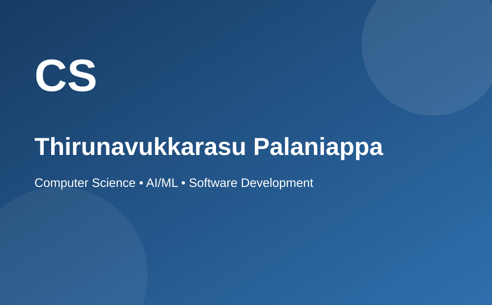
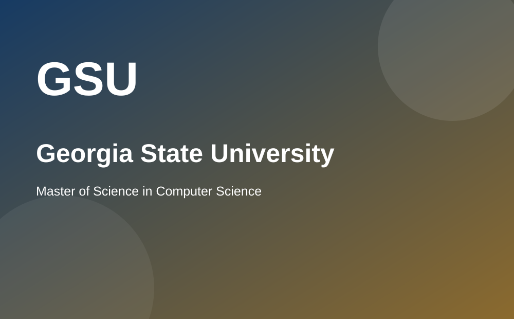

Artificial Intelligence
I am interested in developing intelligent systems and learning how machine learning models can support practical decision-making.
COMPUTER SCIENCE PORTFOLIO
I am a Master of Science in Computer Science student at Georgia State University with interests in artificial intelligence, machine learning, software development, and practical technology solutions.
My academic work has given me opportunities to study areas such as Machine Learning, Deep Learning, Computer Vision, and Advanced Algorithms. I enjoy understanding how data, algorithms, and software systems can work together to solve meaningful problems.
I believe technical learning is most valuable when concepts are applied to real projects. For that reason, I enjoy exploring problems through implementation, experimentation, and continuous improvement. Every project is also an opportunity to learn something new.
Learn More About Me
My current interests combine intelligent systems, software engineering, data analysis, and modern application development.
I am interested in developing intelligent systems and learning how machine learning models can support practical decision-making.

My graduate studies provide a foundation in algorithms, machine learning, deep learning, and computer vision.
I am interested in applying technical knowledge to problems involving cybersecurity, healthcare, industrial data, and software systems.
As a Graduate Teaching Assistant at Georgia State University, I have worked with graduate students in AI-enabled mobile application development. This experience has helped me strengthen communication, teamwork, and the ability to explain technical ideas.
I also gained software engineering experience during an internship with Steel Authority of India Limited, where I worked with machine learning, predictive analytics, and manufacturing data.
View Selected ProjectsThe following embedded video is a general learning resource related to artificial intelligence and machine learning.